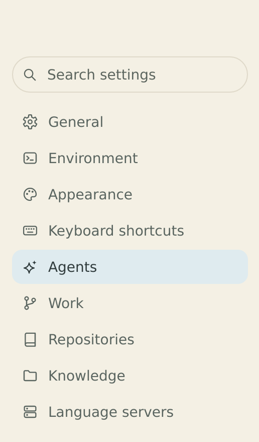

Perch
PerchSections and search
Click the sidebar gear or press Cmd-, (Ctrl-, on Linux). Search across all settings or choose a section.

Escape clears a search, then closes Settings. Back and Close also dismiss it (Cmd-[ and Cmd-W by default). See Keyboard shortcuts to change a binding.
Save or reset a setting
This window changes the environment for that window alone. Other preferences save to config.toml. Perch changes just the key you edit and preserves your comments. Press Enter or leave a text field to save. Escape restores the saved value. The reset arrow removes the key so its default applies again.
Use Repositories to add or remove a clone. Under Knowledge, add or remove directories and choose which repositories can use them.
You can also edit the file directly. Perch checks it every two seconds. If it finds invalid TOML, it keeps your last working settings and pauses edits in Settings. Choose Open in editor to fix the file.
Most changes take effect immediately. Perch checks installed agents again when you change an executable or model list. Lowering Runs at once lets active runs finish before starting more. Turning off Start language servers without asking restores prompts for code that needs trust. Zoom, code size, and font changes take effect after a restart. Settings marks them and offers to restart Perch.